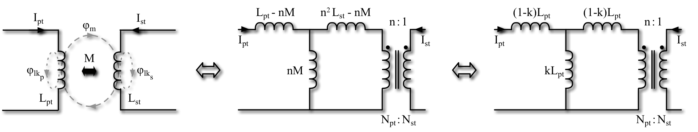
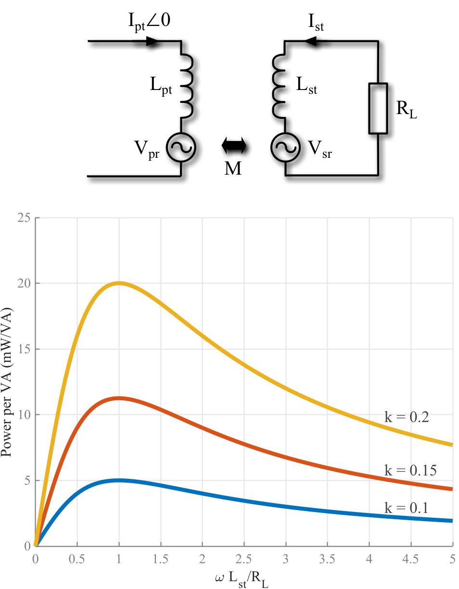
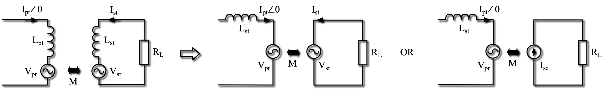
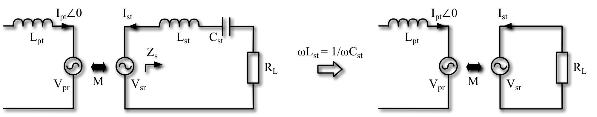
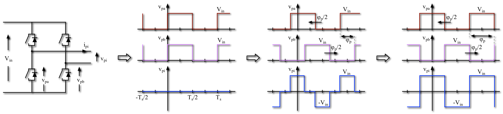

class: title-slide count: false .logo-title[] # Understanding IPT ### An Introduction to the Fundamentals .TitleAuthor[Duleepa J Thrimawithana] --- layout: true name: template_slide .logo-slide[] .footer[[Duleepa J Thrimawithana](https://www.linkedin.com/in/duleepajt), Department of Electrical, Computer and Software Engineering (2020)] --- name: S1 # Wireless Power Transfer - Can be divided in to two broad categories - Radiative transmission through far-field principles - Examples include power transfer through radio-frequency, microwave, optical and ultrasonic technologies - At an experimental stage of development - Start-up companies such as ubeam, energous, WI-Charge, etc. are working in this space - AirFuel Alliance is developing standards - Non-radiative transmission through near-field principles - Inductive power transfer (IPT) and capacitive power transfer (CPT) technologies are utilised - IPT is the most mature technology as it has been used in industrial applications since the 90s - A number of companies such as Daifuku, Conductix Wampfler, Apple, WitriCity, Bombardier, Wave IPT etc. are working in this space - WPC, SAE, etc. standards are being developed --- name: S2 # WI-Charge Technology .center[<img src="img/egs/WiCharge.jpg" height="400px">] --- name: S3 # Energous WattUp Technology .center[<img src="img/egs/Energous.jpg" height="400px">] --- name: S4 # CPT Technologies .center[<img src="img/egs/cpt.png" height="350px">] --- name: S5 # IPT Technologies and Applications - Factory automation and materials handling - Includes hoists, AGVs and clean room systems - Consumer electronics and appliances - Charging phones, laptops, etc. as well as powering appliances - Transportation electrification - Charging stationary and in-motion electric vehicles, charging electric ferries, etc. - Biomedical - Charging and powering medical devices as well as implants - Lighting - Wireless power and communication to tunnel lighting, stage lighting and mines - Industrial applications - Industrial machinery, robots, electric fense energizers, etc. --- class: title-slide layout: false count: false .logo-title[] # Part I - Fundamental Concepts ### Modelling the Coils and Power Transfer --- layout: true name: template_slide .logo-slide[] .footer[[Duleepa J Thrimawithana](https://www.linkedin.com/in/duleepajt), Department of Electrical, Computer and Software Engineering (2020)] --- name: S6 # Components of an IPT System .center[<img src="img/fund/IPTConcSys.png" height="150px">] - Primary consists of a DC-AC switched-mode converter, a compensation network and a transmitter coil(s) - A lumped transmitter coil is often referred to as a primary pad/coil/coupler - An elongated coil is often called a primary track - Can be directly fed by a DC source or through a grid-connected AC-DC converter - Secondary/pick-up consists of a receiver coil(s), a compensation network and an AC-DC converter - The reciever coil is is often referred to as a secondary/pick-up pad/coil/coupler - Primary and pick-up coils are magnetically coupled but the coupling coefficient is typically less than 40% - The compensation networks help improve efficiency by minimizing the VA requirements of converters --- name: S7 # Current Status - Uni or bi-directional power flow - Primary may use a full-bridge, half-bridge, push-pull, multi-level or matrix based converter topology - Pick-up may use a boost, buck, full-bridge, half-bridge or push-pull topology - Control techniques that facilitate ZVS/ZCS over a wide range of conditions - Compensation for both sides is provided through series, parallel or a combination of series-parallel tuned networks - Power ratings up to tens of kWs - Magnetic designs include circular coil, solenoidal coil, polarised coil, multi coil structures as well as track based systems - Ferrites and/or reflection coils are often used to shape the magnetic fields generated - Transmission range of over 400 mm with over ± 200 mm XY tolerance - Efficiency typically over 85% but can be as high as 97% - Operating frequency typically ranges from tens of kHz to tens of MHz --- name: S8 # Modelling the Primary and Pick-up Coils .center[] - The behaviour of the coils can be modelled using a T-equivelent transformer model - `\(L_{pt}\)` and `\(L_{st}\)` are the self-inductances of primary and pick-up coils, respectively - `\(\phi_{m}\)` represents flux linkage while `\(\phi_{lk_p}\)` and `\(\phi_{lk_s}\)` represent leakage flux - The coupling coefficient, k, between the coils is less than 0.4 in a typical IPT system - The mutual inductance, M, between the two coils is given by \\[M = k\sqrt{L\_{pt}L\_{st}}\\] - If the mean-turn lengths of the coils do not change, then `\(n = \frac{N_{pt}}{N_{st}} = \sqrt{\frac{L_{pt}}{L_{st}}}\)`, where `\(n\)` is the turns ratio --- name: S9 # Coupled Inductor Model .center[<img src="img/fund/CpldL.png" height="135px">] - Although a T equivalent transformer model can be used to model the coils, the coupled inductor model is widely used when analysing an IPT system in the phasor-domain - In the coupled inductor model, `\(L_{pt}\)` and `\(L_{st}\)` represent the self-inductances of primary and pick-up coils - `\(V_{sr}\)` represents voltage induced across `\(L_{st}\)` due to current `\(I_{pt}\angle 0\)` flowing through `\(L_{pt}\)` and is given by \\[V\_{sr} = \omega MI\_{pt}e^{j\pi/2}\\] - Similarly, `\(V_{pr}\)` represents voltage induced across `\(L_{pt}\)` due to `\(I_{st}\angle\theta\)` and is given by \\[V\_{pr} = \omega MI\_{st}e^{j(\theta+\pi/2)}\\] ??? If the current through primary coil is `\(I_{pt} \sin (\omega t)\)` then, \\[\phi\_{m} \propto I\_{pt} \sin (\omega t) \\] The voltage induced on the pick-up coil is therefore, \\[v\_{sr} \propto \frac{\mathrm{d} \phi\_{m} }{\mathrm{d} t} \\] \\[v\_{sr} \propto \omega I\_{pt} \cos (\omega t) \\] Since `\(M\)` represent the coupling between the two coils, \\[v\_{sr} = \omega M I\_{pt} \cos (\omega t) \\] In the phasor-domain, \\[V\_{sr} = \omega M I\_{pt} e^{j\pi/2} \\] --- name: S10 # Open-Circuit Voltage & Short-Circuit Current .left-column[ - The voltage measured across an open-circuited pick-up coil, `\(V_{oc}\)`, is the same as `\(V_{sr}\)` and therefore \\[V\_{oc} = V\_{sr} = \omega MI\_{pt}e^{j\pi/2}\\] - The current flowing through a short-circuited pick-up coil, `\(I_{sc}\)`, is \\[I\_{sc} = \frac{V\_{sr}}{j\omega L\_{st}} = I\_{pt}\frac{M}{L\_{st}}\\] - The uncompensated volt-ampere (VA) capacity of the pick-up coil can be given by \\[S\_{u} = \left | V\_{oc} \right | \left | I\_{sc} \right | = I\_{pt}^2\frac{\omega M^2}{L\_{st}}\\] ] .right-column[.right[ <img src="img/fund/VocIsc.png" width="310px"> ]] --- name: S11 # Power Transferred Across Airgap .left-column[ - Assume that the `\(V_{sr}\)` induced by `\(I_{pt}\angle 0\)` causes a current `\(I_{st}\angle\theta\)` to flow through a load, `\(Z_{sc}\)`, attached across the pick-up coil - Under these conditions, power transferred is \\[P\_{o} = \Re \left \\{ V\_{sr}I\_{st}e^{-j(\theta)} \right \\} = \left | V\_{sr} \right | \left | I\_{st} \right | \cos(\pi/2-\theta)\\] - The VA rating of the coils required to achieve this is \\[\mathit{VA}\_{pt} = \omega L\_{pt} \left | I\_{pt} \right |^2 \quad \text{and} \quad \mathit{VA}\_{st} = \omega L\_{st} \left | I\_{st} \right |^2 \\] - Thus `\(P_{o}\)` is related to the VA in the coils as given by \\[P\_{o} = k \sqrt{\mathit{VA}\_{pt}\mathit{VA}\_{st}} \sin(\theta) \\] - Typically, `\(\sin(\theta) \approx 1\)`, and thus `\( P_o \approx k \sqrt{\mathit{VA}_{pt}\mathit{VA}_{st}} \)` ] .right-column[.right[ <img src="img/fund/GenP.png" width="310px"> ]] ??? Note that \\[P\_{o} = \Re \left \\{ V\_{sr} \bar {I\_{st}} \right \\} \\] Substituting `\( \left| V_{sr} \right | = \omega M \left| I_{pt} \right | \)`, \\[P\_{o} = \omega M \left | I\_{pt} \right | \left | I\_{st} \right | \cos(\pi/2-\theta)\\] \\[P\_{o} = k\sqrt{ (\omega L\_{pt} \left | I\_{pt} \right |^2 ) (\omega L\_{st} \left | I\_{st} \right |^2) } \sin(\theta)\\] \\[P\_{o} = k \sqrt{\mathit{VA}\_{pt}\mathit{VA}\_{st}} \sin(\theta) \\] --- name: S12 # Coil Q, Losses & Maximum Efficiency - Assume that the losses in `\(L_{pt}\)` and `\(L_{st}\)` are modelled using equivelent series resistances (ESRs) `\(r_{pt}\)` and `\(r_{st}\)` - The quality factors, `\(Q_{pt}\)` and `\(Q_{st}\)`, of the primary and pick-up coils are \\[Q\_{pt} = {\omega L\_{pt}}/{r\_{pt}} \quad \text{and} \quad Q\_{st} = {\omega L\_{st}} / {r\_{st}} \\] - The total losses in the two coils can be expressed as \\[P\_{loss(c)} = \left | I\_{pt}^2 \right | r\_{pt} + \left | I\_{st}^2 \right | r\_{st} = \frac{\mathit{VA}\_{pt}}{Q\_{pt}} + \frac{\mathit{VA}\_{st}}{Q\_{st}}\\] - The maximum efficiency is achieved when losses in the coils are matched (i.e. `\(\mathit{VA}_{pt}/Q_{pt} = \mathit{VA}_{st}/Q_{st}\)` ) \\[ \eta\_{c\_{max}} = \frac{ k \sin(\theta) - \frac {1} { \sqrt {Q\_{pt} Q\_{st}} }} {k \sin(\theta) + \frac {1} {\sqrt {Q\_{pt} Q\_{st}} }} \\] --- class: title-slide layout: false count: false .logo-title[] # Part II - Coil Structures ### Field Patterns and Coil Parameters --- layout: true name: template_slide .logo-slide[] .footer[[Duleepa J Thrimawithana](https://www.linkedin.com/in/duleepajt), Department of Electrical, Computer and Software Engineering (2020)] --- name: S13 # Types of Coil Structures .center[<img src="img/coils/CoilGen.png" height="150px">] - Can be broadly divided into ditributed track type coil structures and lumped coil structures - Typically, ferrites are used to help shape the field generated - Maximize coupling, minimize leakage and improve coil Q - As an alternative for ferrites, energised or passive field shapping coils can be used - Lumped coil structures can be further divided as non-polarised, polarised and multi-coil structures - Multi-coil structures typically employ multiple decoupled coils - Each coil can be driven seperately to create the desired field pattern - Repeater coils can be used to extend the range --- name: S14 # Construction of a Lumped Coil .left-column[ - Contructed as planar spiral winding and take the shape of a circle/square/rectangle/etc. - Multifilar windings can be used to increase the current rating, but special attention is required to ensure current sharing - High-frequency Litz wire is used to improve coil Q - Need to ensure that the windings are appropriately isolated - Ferrite plates/disks/bars are used to create a single sided flux pattern - The housing that provides electrical isolation holds the Litz wire and the ferrites - Typically the windings and ferrites are potted - Aluminum shielding is used to reduce leakage flux ] .right-column[ .center[<img src="img/coils/Construction.png" width="240px">] ] --- name: S15 # Non-Polarised Coils .left-column[ - The single sided magnetic field distribution is from centre to edge of the coil - Typically used to transfer power over a gap that is roughly equivalent to one quarter of the coil diameter - Changes in the displacement between the primary and pick-up coils causes - Changes to `\(k\)` between the coils - Changes to `\(L_{pt}\)` and `\(L_{st}\)` of the coils - With lateral/longitudinal displacement `\(k\)` will drop to 0 - The point at which `\(k\)` drops to 0 is referred to as the decoupled position of the coils - A negative `\(k\)` after the decoupled position indicates a `\(180^0\)` phase-shift in induced voltage ] .right-column[ <img src="img/coils/CircCoil.png" width="290px"> ] --- name: S16 # DD Type Polarised Coils .left-column[ - The single sided magnetic field distribution is from one end to the other end of the coil - Typically used to transfer power over a gap that is roughly equivalent to one half of the coil length - Flux-pipe formed by the two coils at the center of the pad should be as large as possible - Changes in the displacement between the primary and pick-up coils causes - Changes to `\(k\)` between the coils - Changes to `\(L_{pt}\)` and `\(L_{st}\)` of the coils - With longitudinal (x) displacement `\(k\)` will drop to 0 - At the point at which `\(k\)` drops to 0, primary and pick-up DD coils are decoupled ] .right-column[ .center[] ] --- exclude: true name: S17 # Multi Coil Structures .center[<img src="img/coils/MultiCoil.png" height="150px">] - DDQ structure is one of the most common multi-coil structures - The quadrature (Q) winding is decoupled from the DD winding - Thus, both windings can be used independently to transfer power - A DD primary and DDQ secondary provides wide spatial tolerance since the Q winding helps transferring power when `\(k\)` between the DD windings drop - Bi-polar structure employs two overlapping windings that are decoupled from each other - When used as a transmitter, each coil can be driven at a desired magnitude and a phase - Tri-polar and other multi-coil structures typically employ decoupled overlapping windings --- name: S18 # Demo: Fields Generated by a DD Coil .center[ ] --- class: title-slide layout: false count: false .logo-title[] # Part III - Compensating the Pick-Up Coil ### Analysing the Behaviour of a Pick-up --- layout: true name: template_slide .logo-slide[] .footer[[Duleepa J Thrimawithana](https://www.linkedin.com/in/duleepajt), Department of Electrical, Computer and Software Engineering (2020)] --- name: S19 # An Uncompensated Pick-up .center[<img src="img/comp/UncompR.png" height="135px">] - Assume a load resistor, `\(R_{L}\)`, is connected directly across a pick-up coil, which is coupled to a primary coil - The primary coil is driven by the primary converter generating a current `\(I_{pt}\angle 0\)` at an angular frequency `\(\omega = 2\pi f\)` - The current flowing through pick-up coil as well as the load will be \\[ I\_{st} = \frac {-V\_{sr}} {R\_{L} + j\omega L\_{st}} = \frac {-\omega MI\_{pt}e^{j\pi/2}} {R\_{L} + j\omega L\_{st}} \\] - The impedance of `\(L_{st}\)` limits the ability to supply current to `\(R_{L}\)` --- name: S20 # Power from an Uncompensated Pick-up .left-column[ - The power delivered to the load is then \\[ P\_{o} = \left | I\_{st} \right |^2 R\_{L} = \left ( \omega MI\_{pt} \right )^2 \frac {R\_{L}} {R\_{L}^2 + \omega^2 L\_{st}^2 } = k^2 \mathit{VA}\_{pt} \frac {\omega L\_{st} / R\_{L}} { 1 + \omega^2 L\_{st}^2 / R\_{L}^2 } \\] - At a load `\(R_L = \omega L_{st}\)`, maximum power is delivered \\[ P\_{o\_{(max)}} = \frac {\left ( \omega MI\_{pt} \right )^2} {2 \omega L\_{st} } = 0.5 V\_{oc}I\_{sc} = 0.5k^2\mathit{VA}\_{pt} \\] - As an example, when `\(k = 0.1\)`, to deliver 5 mW to the load, the primary coil should be driven atleast at 1 VA - The impedance of `\(L_{st}\)` limits the power transfer ] .right-column[.right[  ]] --- name: S21 # What Should an 'Ideal' Pick-up Look Like? .center[] - The load `\(R_{L}\)` 'ideally' needs to be able to take any amount of power from pick-up - This could be achieved, for example if the pick-up coil is made to to look like an ideal voltage source - The impedance of `\(L_{st}\)` need to be made zero - In this case we would have an ideal voltage source, `\(V_{sr}\)`, supplying the load, `\(R_{L}\)` - Alternatively, the pick-up coil can be made to look like an ideal current source, `\(I_{sc}\)` - Resonance can be used to achieve this 'ideal voltage source' or 'ideal current source' type behaviour --- name: S22 # A Series Compensated Pick-up .center[] - The impedance of `\(L_{st}\)` can be compensated using the capacitor `\(C_{st}\)` that is connected in series with `\(L_{st}\)` - To allow the pick-up to behave like an ideal voltage source, at a given `\(\omega\)`, `\(C_{st}\)` can be selected such that \\[ \omega L\_{st} = \frac {1} {\omega C\_{st}} \quad \text{or} \quad \omega = \frac {1} { \sqrt {L\_{st}C\_{st}} } \\] - The negative impedance of `\(C_{st}\)` cancel the positive impedance of `\(L_{st}\)`, putting `\(R_{L}\)` directly in parallel with `\(V_{sr}\)` since `\(Z_{s} = R_{L}\)` --- name: S23 # Power Transfer with Series Compensation .left-column[ - In practice, it is not possible to perfectly compensate the impedance of `\(L_{st}\)` - Due to tollerances, temperature, misalignment, etc. - There will be some residual impedance left, which can be denoted by `\( \Delta \omega L_{st} \)` - If perfectly tuned (i.e. `\(\Delta = 0\)`) output power increases with `\(1/R_L\)` \\[ P\_{o} = \frac {\left ( \omega MI\_{pt} \right )^2 } { R\_{L} } = k^2 \mathit{VA}\_{pt} \frac {\omega L\_{st}} {R\_{L} } \\] - In practice (i.e. `\(\Delta \neq 0\)`) maximum output power is limited to \\[ P\_{o\_{(max)}} = \frac {\left ( \omega MI\_{pt} \right )^2 } { 2 \Delta \omega L\_{st} } = k^2 \mathit{VA}\_{pt} \frac {1+ \Delta} {2 \Delta } \quad \text{at} \quad R\_{L} = \Delta \omega L\_{st}\\] ] .right-column[.right[ <img src="img/comp/PScompR.png" width="310px"> ]] --- name: S24 # A Parallel Compensated Pick-up .center[] - The impedance of `\(L_{st}\)` is compensated using the capacitor `\(C_{st}\)` that is connected in parallel with `\(L_{st}\)` - To allow the pick-up to behave like an ideal current source, at a given `\(\omega\)`, `\(C_{st}\)` can be selected such that \\[ \omega L\_{st} = \frac {1} {\omega C\_{st}} \quad \text{or} \quad \omega = \frac {1} { \sqrt {L\_{st}C\_{st}} } \\] - The magnitude of the current source is `\(I_{sc} = V_{sr} / j \omega L_{st} \)` - Unlike in a series compensated pick-up, `\(Z_{s}\)` can only be real at a specific `\(R_{L}\)` while under all other conditions it will be reactive --- name: S25 # Power Transfer with Parallel Compensation .left-column[ - In practice, it is not possible to perfectly compensate the impedance of `\(L_{st}\)` - Due to tollerances, temperature, misalignment, etc. - There will be some residual impedance left, which can be denoted by `\( \Delta \)` - If perfectly tuned (i.e. `\(\Delta = 0\)`) output power increases with `\(R_L\)` \\[ P\_{o} = \frac {\left ( \omega MI\_{pt} \right )^2 R\_{L} } { \omega^2 L\_{st}^2 } = k^2 \mathit{VA}\_{pt} \frac {R\_{L} } {\omega L\_{st}} \\] - When detuned (i.e. `\(\Delta \neq 0\)`) maximum output power is limited to \\[ P\_{o\_{(max)}} = \frac {\left ( \omega MI\_{pt} \right )^2 } { 2 \Delta (1 + \Delta) \omega L\_{st}} = \frac {k^2 \mathit{VA}\_{pt}} {2 \Delta} \quad \text{at} \quad R\_{L} = \omega L\_{st} \frac {1+\Delta} {\Delta}\\] ] .right-column[.right[ <img src="img/comp/PPcompR.png" width="310px"> ]] --- name: S26 # Other Compensation Methods - Many other compensation methods exists - For example LCC, which formed by parallel tuning a partially series compensated pick-up coil, or LCL compensation is also common - More complex compensation networks include - LCCL and LCLC - Hybrid compensation - Impedance compression networks .center[] --- name: S27 # Operating Quality Factor of a Pick-up - `\(P_o\)` of a series compensated pick-up was proportional to `\(\omega L_{st}/R_L\)`, while for a parallel/LCL compensated pick-up `\(P_o\)` was proportional to `\(R_L/\omega L_{st}\)` - The ratio `\(\omega L_{st}/R_L\)` or `\(R_L/\omega L_{st}\)`, is referred to as the operating quality factor of a pick-up and thus when operated at a load `\(R_L\)`, the operating quality factor of a series compensated pick-up, `\(Q_{ss_{(op)}}\)`, or the operating quality factor of a parallel/LCL compensated pick-up, `\(Q_{sp_{(op)}}\)`, can be given by \\[ Q\_{ss\_{{(op)}}} = \frac {\omega L\_{st} } {R\_L} \quad \text{or} \quad Q\_{sp\_{{(op)}}} = \frac {R\_L} {\omega L\_{st} } \\] - A higher operating `\(Q\)` results in higher power but also makes the pick-up increasingly sensitive to changes - As an example, from previous analysis, if operated at a `\(Q_{ss_{(op)}}\)` of 5, a 20% change in `\(L_{st}\)` results in a 40% drop in `\(P_o\)` - Typically, an IPT system is designed to have an operating `\(Q\)` of less than 10 - Note that `\(Q_{pt}\)` and `\(Q_{st}\)` are a measure of the coil quality and it is therefore desirable to for these to be much larger than the operating `\(Q\)` --- class: title-slide layout: false count: false .logo-title[] # Part IV - Primary Compensation Networks ### Analysing the Behaviour of an IPT System --- layout: true name: template_slide .logo-slide[] .footer[[Duleepa J Thrimawithana](https://www.linkedin.com/in/duleepajt), Department of Electrical, Computer and Software Engineering (2020)] --- name: S28 # Reflected Impedance on to Primary .center[<img src="img/netw/RefImp.png" height="135px">] - The pick-up can be modelled as `\(V_{sr}\)` driving into `\(Z_s\)`, which models the pick-up compensation and the load - Current flowing through the pick-up coil is therefore \\[ I\_{st} = -V\_{sr} / Z\_s = -j \omega M I\_{pt} / Z\_s \\] - `\(I_{st}\)` induces a voltage, `\(V_{pr}\)`, across the primary coil, which can be given by \\[ V\_{pr} = j \omega M I\_{st} = \omega^2 M^2 I\_{pt} / Z\_s \\] - `\(V_{pr}\)` can also be represented as a reflected impedance where `\(Z_{pr} = \omega^2 M^2 / Z_s \)` --- name: S29 # Primary Compensation Networks .center[] - Directly driving the highly inductive load consisting of `\(L_{pt}\)` and `\(Z_{pr}\)` with a power converter can be very inefficient and costly - For example the VA rating of the converter, which is required to deliver `\(1W\)` to the pick-up load, can be in excess of `\(1/(k^2Q_{ss/sp_{(op)}})\)` - If `\(k = 0.1\)` and `\(Q_{ss/sp_{(op)}}=5\)`, which are typical for an IPT system, the primary converter will need to be supply 20VA to deliver 1W to the load - Compensation networks are used to reduce the VA demand of the primary converter - Series or LCL compensation is commonly employed if the primary is driven by a voltage source converter - Parallel compensation is commonly employed if the primary is driven by a current source converter --- name: S30 # A Series Compensated Primary (P-I) .center[<img src="img/netw/SCompGen.png" height="135px">] - The impedance of `\(L_{pt}\)` can be compensated using the capacitor `\(C_{pt}\)` that is connected in series with `\(L_{pt}\)` - At a given operating `\(\omega\)` (i.e. fundamental of `\(V_{pi}\)`), `\(C_{pt}\)` can be selected to negate `\(L_{pt}\)` by ensuring \\[ \omega L\_{pt} = \frac {1} {\omega C\_{pt}} \quad \text{or} \quad \omega = \frac {1} { \sqrt {L\_{pt}C\_{pt}} } \\] - When `\(C_{pt}\)` is designed to fully compensate `\(L_{pt}\)`, the primary converter drives an impedance \\[ Z\_{p} = Z\_{pr} = \omega^2 M^2 / Z\_s \\] --- name: S31 # A Series Compensated Primary (P-II) .center[<img src="img/netw/SCompGen.png" height="135px">] - In a typical IPT system, the pick-up compensation network ensures that `\(Z_{s}\)` is mostly resistive - For example, in an ideally series compensated pick-up, `\(Z_{s} = R_L\)` - Or in an ideally parallel compensated pick-up, - Thus when the primary coil is fully series compensated \\[ Z\_{p} = \frac {\omega^2 M^2} {R\_L} \\] - The primary converter and the primary coil currents become `\(I_{pi} = V_{pi}R_L / \omega^2 M^2 \)` - Primary converter will only have to be supply 1VA to deliver 1W to the load --- name: S32 # An LCL Compensated Primary .center[] - The impedance of `\(L_{pt}\)` is compensated using the capacitor `\(C_{pt}\)` and the inductor `\(L_{pi}\)` - Typically, at a given operating `\(\omega\)` (i.e. fundamental of `\(V_{pi}\)`), `\(C_{pt}\)` and `\(L_{pi}\)` are chosen such that \\[ \omega L\_{pt} = \frac {1} {\omega C\_{pt}} = \omega L\_{pi} \quad \text{or} \quad \omega = \frac {1} { \sqrt {L\_{pt}C\_{pt}} } = \frac {1} { \sqrt {L\_{pi}C\_{pt}} } \\] - Thus, when the LCL network uses matching impedances, and if the pick-up is series compensated \\[ Z\_{p} = \omega^2 L\_{pi}^2 \times R\_L / ( \omega^2 M^2 ) \\] --- name: S33 # Compensation Networks - Summary <style type="text/css"> .tg {border-collapse:collapse;border-spacing:0;} .tg td{font-family:Arial, sans-serif;font-size:14px;padding:9.8px 5px;border-style:solid;border-width:1px;overflow:hidden;word-break:normal;border-color:black;} .tg th{font-family:Arial, sans-serif;font-size:14px;font-weight:normal;padding:9.8px 5px;border-style:solid;border-width:1px;overflow:hidden;word-break:normal;border-color:black;} .tg .tg-0n7a{background-color:#9aff99;border-color:#ffffff;text-align:center} .tg .tg-zv4m{border-color:#ffffff;text-align:center;vertical-align:top} .tg .tg-uwdm{background-color:#ffffc7;border-color:#ffffff;text-align:center} .tg .tg-lghr{border-color:#ffffff;text-align:center} .tg .tg-w8f3{background-color:#c0c0c0;color:#000000;border-color:#ffffff;text-align:center} .tg .tg-uzdq{background-color:#ffce93;border-color:#ffffff;text-align:center} .tg .tg-lxhs{background-color:#ffce93;border-color:#ffffff;text-align:center} .tg .tg-mthk{background-color:#ffffc7;border-color:#ffffff;text-align:center} .tg .tg-bk58{background-color:#9aff99;border-color:#ffffff;text-align:center} .tg .tg-us2q{background-color:#ffffff;border-color:#ffffff;text-align:center} .tg .tg-bqvo{background-color:#ffffff;border-color:#ffffff;text-align:center} </style> <table class="tg"> <tr> <th class="tg-zv4m"></th> <th class="tg-lghr"></th> <th class="tg-w8f3">Pick-up Series</th> <th class="tg-w8f3">Pick-up Parallel</th> <th class="tg-w8f3">Pick-up LCL</th> </tr> <tr> <td class="tg-zv4m"></td> <td class="tg-uzdq">`\(Q_{(op)}\)`</td> <td class="tg-lxhs">`\( \omega L_{st} \div R_L \)`</td> <td class="tg-lxhs">`\( R_L \div \omega L_{st} \)`</td> <td class="tg-lxhs">`\( R_L \div \omega L_{st} \)`</td> </tr> <tr> <td class="tg-zv4m"></td> <td class="tg-uzdq">`\(P_{o}\)`</td> <td class="tg-lxhs">`\( k^2 \mathit{VA_{pt}} Q_{(op)} \)`</td> <td class="tg-lxhs">`\( k^2 \mathit{VA_{pt}} Q_{(op)} \)`</td> <td class="tg-lxhs">`\( k^2 \mathit{VA_{pt}} Q_{(op)} \)`</td> </tr> <tr> <td class="tg-zv4m"></td> <td class="tg-uzdq">`\(Z_{s}\)`</td> <td class="tg-lxhs">`\(R_{L}\)`</td> <td class="tg-lxhs">`\( \left( j \omega L_{st} + R_L \right) \div \left( 1 + Q_{(op)}^2 \right) \)`</td> <td class="tg-lxhs">`\( \omega^2 L_{si}^2 \div R_{L}\)`</td> </tr> <tr> <td class="tg-uwdm" rowspan="3">Primary<br>Series</td> <td class="tg-uwdm">`\(Z_{p}\)`</td> <td class="tg-mthk">`\( \omega^2 M^2 \div R_{L}\)`</td> <td class="tg-mthk">`\( \omega^2 M^2 \left( 1 + Q_{(op)}^2 \right) \div \left( j \omega L_{st} + R_L \right) \)`</td> <td class="tg-mthk">`\( \omega^2 M^2 R_{L} \div \omega^2 L_{si}^2 \)`</td> </tr> <tr> <td class="tg-uwdm">`\(I_{pi}\)`</td> <td class="tg-mthk">`\( V_{pi} R_{L} \div \omega^2 M^2 \)`</td> <td class="tg-mthk">`\( V_{pi} \left( j \omega L_{st} + R_L \right) \div \omega^2 M^2 \left( 1 + Q_{(op)}^2 \right) \)`</td> <td class="tg-mthk">`\( V_{pi} \omega^2 L_{si}^2 \div \omega^2 M^2 R_{L}\)`</td> </tr> <tr> <td class="tg-uwdm">`\(I_{pt}\)`</td> <td class="tg-mthk">`\( V_{pi} R_{L} \div \omega^2 M^2 \)`</td> <td class="tg-mthk">`\( V_{pi} \left( j \omega L_{st} + R_L \right) \div \omega^2 M^2 \left( 1 + Q_{(op)}^2 \right) \)`</td> <td class="tg-mthk">`\( V_{pi} \omega^2 L_{si}^2 \div \omega^2 M^2 R_{L}\)`</td> </tr> <tr> <td class="tg-0n7a" rowspan="3">Primary<br>LCL</td> <td class="tg-0n7a">`\(Z_{p}\)`</td> <td class="tg-bk58">`\( \omega^2 L_{pi}^2 R_L \div \omega^2 M^2 \)`</td> <td class="tg-bk58">`\( \omega^2 L_{pi}^2 \left( j \omega L_{st} + R_L \right) \div \omega^2 M^2 \left( 1 + Q_{(op)}^2 \right) \)`</td> <td class="tg-bk58">`\( \omega^4 L_{pi}^2 L_{si}^2 \div \omega^2 M^2 R_L \)`</td> </tr> <tr> <td class="tg-0n7a">`\(I_{pi}\)`</td> <td class="tg-bk58">`\( V_{pi} \omega^2 M^2 \div \omega^2 L_{pi}^2 R_L \)`</td> <td class="tg-bk58">`\( V_{pi} \omega^2 M^2 \left( 1 + Q_{(op)}^2 \right) \div \omega^2 L_{pi}^2 \left( j \omega L_{st} + R_L \right) \)`</td> <td class="tg-bk58">`\( V_{pi} \omega^2 M^2 R_L \div \omega^4 L_{pi}^2 L_{si}^2 \)`</td> </tr> <tr> <td class="tg-0n7a">`\(I_{pt}\)`</td> <td class="tg-bk58">`\(V_{pi} \div j \omega L_{pi} \)`</td> <td class="tg-bk58">`\(V_{pi} \div j \omega L_{pi} \)`</td> <td class="tg-bk58">`\(V_{pi} \div j \omega L_{pi} \)`</td> </tr> <tr> <td class="tg-zv4m"><img width=85/></td> <td class="tg-us2q"><img width=75/></td> <td class="tg-bqvo"><img width=275/></td> <td class="tg-bqvo"><img width=275/></td> <td class="tg-bqvo"><img width=275/></td> </tr> </table> --- class: title-slide layout: false count: false .logo-title[] # Part V - Primary Converters ### Voltage and Current Sourced Options --- layout: true name: template_slide .logo-slide[] .footer[[Duleepa J Thrimawithana](https://www.linkedin.com/in/duleepajt), Department of Electrical, Computer and Software Engineering (2020)] --- name: S34 # Voltage Source Converters .left-column[ - A full-bridge converter is typically used to drive a series/LCL compensated primary coil - Half-bridge converters may be used in low power applications - The primary converter can be fed from the grid through a PFC stage or a grid-tied inverter or directly from a DC source - The frequency of the fundamental component of `\(v_{pi}\)` generated by the converter is at or near the tuned frequency of the compensation network (10's of kHz) - Traditional PWM schemes cannot be used to regulate, `\(V_{pi(1)}\)` (same as `\(V_{pi}\)`), the phasor magnitude of the fundamental component of `\(v_{pi}\)` - Typically, voltage cancellation schemes are used, for example using phase-shift modulation to regulate the magnitude of `\(V_{pi}\)` ] .right-column[ .center[<img src="img/conv/VSIGen.png" width="300px">] ] --- name: S35 # Phase-Shift Modulation .center[] - The switches are operated at a frequency `\(f_{s}\)`, where `\(f_{s}\)` is equal to or close to the tunned frequency of the compensation network - Each leg of the full-bridge operated at 50% duty-cycle, generating the square-waves `\(v_{pa}\)` and `\(v_{pb}\)` - The phase-shift modulation, `\(\phi_{p}\)`, applied between `\(v_{pa}\)` and `\(v_{pb}\)`, regulates the magnitude of the fundamental component of `\(v_{pi}\)`, since `\(v_{pi}=v_{pa}-v_{pb}\)` - When `\(\phi_{p} = \pi\)`, `\(V_{pi}\)` is a maximum --- name: S36 # Current Source Converters .center[] - Current source push-pull converters are widely used in low power IPT applications - Drives a parallel compensated primary coil at resonance in autonomous operating mode or near resonance in fixed-frequency operating mode - Not widely used in high-power applications - Require a large DC inductor - Sensitive to changes in operating conditions - Current source full-bridge converters may be used in higher power applications --- class: title-slide layout: false count: false .logo-title[] # Part VI - Pick-up Converters ### Rectification & Regulation --- layout: true name: template_slide .logo-slide[] .footer[[Duleepa J Thrimawithana](https://www.linkedin.com/in/duleepajt), Department of Electrical, Computer and Software Engineering (2020)] --- name: S37 # Pick-up Converters .center[<img src="img/pkup/PickupGen.png" height="110px">] <div style="height:1px;font-size:1px;"> </div> - In most applications a rectifier is used to derive a DC output - In some applications, current doubler rectifiers are used to increase the power transfer capability of a parallel compensated pick-up - Following the rectifier, a DC-DC converter is often used to regulate the output - Alternatively, an active rectifier may be used for rectification and regulation while also providing additional functionalities such as bi-directional power flow or improved misalignment tolerance - However, the active rectifier needs to be synchronised with the primary converter - Direct AC-AC processing pick-up converters may be used if an AC output is required --- name: S38 # Rectification of a Series Compensated Pick-up .center[] - A diode rectifier and a filter capacitor used to derive a DC output - The pick-up behaves as a voltage source maintaining a nearly constant DC voltage across `\(R_{L}\)` - Assuming `\(\omega L_{st} = 1 / \omega C_{st}\)` and `\(I_{si}\)` is sinusoidal, \\[ P\_{o} = \frac {\pi^2} {8} \frac {V^2\_{sr}} {R\_{L(dc)}} \quad \text{&} \quad R\_{L(dc)} = \frac {\pi^2} {8} R\_{L(ac)} \\] --- name: S39 # Rectification of a Parallel Compensated Pick-up .center[] - A diode rectifier, a DC inductor and a filter capacitor used - The pick-up behaves as a current source maintaining a nearly constant DC current through `\(R_{L}\)` - Assuming `\(\omega L_{st} = 1 / \omega C_{st}\)` and `\(V_{si}\)` is sinusoidal, \\[ P\_{o} = \frac {\pi^2} {8} I^2\_{sc} R\_{L(dc)} \quad \text{&} \quad R\_{L(dc)} = \frac {8} {\pi^2} R\_{L(ac)} \\] --- name: S40 # Short-Circuit Regulator .center[] - Following the rectifier, a short-circuit (boost) regulator, can be used to regulate the output of a parallel compensated IPT pick-up - The duty-cycle, `\(D_{scr}\)`, of `\(Q_{1}\)` is controlled to regulate `\(I_{out}\)`, and therefore `\(V_{out}\)` - `\(Q_{1}\)` can be operated either at a 'low' switching frequency using a hysteritic controller or at a 'high' switching frequency using for example a PI controller - `\(L_{dc}\)` should be sufficiently large to maintain `\(I_{Ldc}\)` continuous --- name: S41 # Active Rectifiers .center[] - A typical active rectifier employs a full-bridge converter that is controlled to generate a `\(V_{si}\)` that leads or lags `\(V_{pi}\)` by a phase-angle `\(\theta\)` - `\(\theta\)` can be controlled together with the amplitude of `\(V_{si}\)` to generate a specific AC impedance, `\(Z_{L(ac)}\)`, across pick-up compensation network - The reactive part of `\(Z_{L(ac)}\)` can be used to improve power transfer and/or reduce losses, especially when operated under misaligned conditions - In applications requiring only uni-directional power flow, two of the switches in the full-bridge can be replaced with diodes --- class: title-slide layout: false count: false .logo-title[] # References #### These slides were derived from a presentation prepared by the author on #### "Fundametals of Inductive Power Transfer: A Workshop with Example Designs" #### @wirelesspower.github.io/SeminarsWorkshops/FundamentalsofIPTDJT/presentation.html --- class: title-slide layout: false count: false .logo-title[] # Thank You